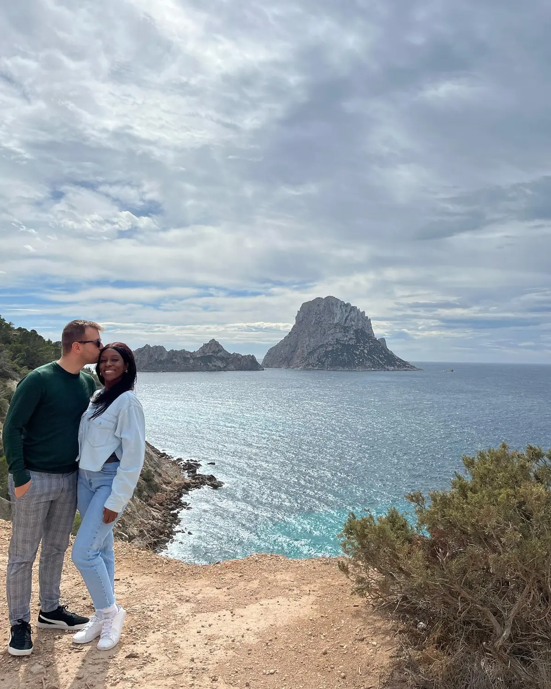

El icono01
Es Vedrà
📍 Costa suroeste de Ibiza
La misteriosa isla rocosa de Es Vedrà se alza directamente del mar frente a la salvaje costa suroeste de Ibiza, y los miradores en lo alto de los acantilados son pura magia, sobre todo al atardecer. Se llega fácilmente en Vespa y es uno de los rincones más bonitos y menos «fiesteros» de la isla.
Mejor al atardecerVe en Vespa